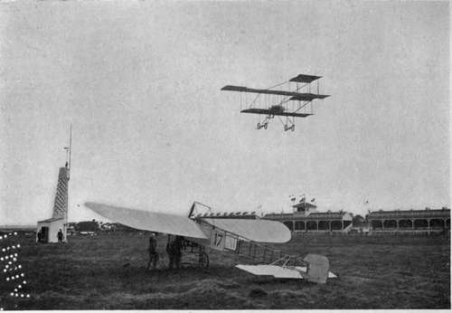
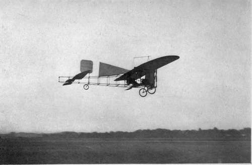

The Blériot Monoplanes
Description
This section is from the book "The New Art Of Flying", by Waldemar Kaempffert. Also available from Amazon: The New Art of Flying.
The Blériot Monoplanes
Louis Blériot is a well-to-do manufacturer of automobile lamps whose attention was directed to flying-machines in 1906. He has the distinction of having broken more machines and more frequently risked his life than any other man interested in the new sport. What is more, he was the first man who ever flew a monoplane.
Blériot's remarkable experience has resulted in the development of two types of machines known respectively as the Blériot XI (Fig. 81) and the Blériot XII (Fig. 88). The Blériot XI is a fast model patterned after that with which Blériot flew across the English Channel; the Blériot XII is a passenger-carrying machine, which differs somewhat from the XI.
Fig. 81. The machine in the air is a Farman biplane of the latest type. The machine on the ground is a Blériot monoplane.
Photograph by Edwin Levick.
The main plane of the No. XI is built in halves and consists of " Continental rubber " stretched over a wooden frame. In order that the machine may be readily transported the halves of the plane can be detached from a central joint. This detachability, moreover, renders it possible to interchange wings of large and small area. The spread is normally 28.2 feet, the depth 6.5 feet, and the total area 151 square feet.
To steady the machine longitudinally in flight a horizontal surface or tail is employed. The horizontal or elevation rudder consists of two movable surfaces, one at each side of this tail. The horizontal rudder is operated by a central lever in the manner described in Chapter V.
The vertical rudder of the Blériot XI consists of a vertical surface in the rear of the machine. It is operated by tiller wires connected with a foot lever.
Lateral control of the machine is obtained by wing-warping, as in the Wright biplane. For this purpose the central lever or bell-column, described in Chapter V, is employed, the column being thrown from side to side to pull on one wing-warping wire and to slacken the other.
In the machine with which he flew across the English Channel, Blériot used a 25 horsepower Anzani motor. Since then 50 horsepower Gnome motors have usually been employed, the motor being mounted in front of the machine and driving a two-bladed Chau-vière propeller 6.87 feet in diameter at the rate of 1,200 to 1,400 revolutions a minute.
The starting and alighting gear of the Blériot XI consists of rubber-tired wheels and rubber shock-absorbers. For the rear wheel, as shown in Fig. 86, a skid has been substituted.
Fig. 86. The Blériot monoplane XII. This is a passenger-carrying type. The pilot and his companion sit side by side below the wings.
Photograph by Edwin Levick.
In the smaller type of Blériot a fuel tank is placed very far below the frame in order to lower the centre of gravity. In the larger type two fuel tanks are placed between the wings in the body of the machine right in front of the pilot's seat. In order that the lowered fuel tank of the small Blériot XI may offer as little resistance to the air as possible, it is given a fish form (Fig. 86) for the reason that Prandtl has proven that such shapes offer the least resistance.
Racing machines are also made on the lines of the Blériot XI, but with a smaller wing-spread and 100 horse-power, fourteen-cylinder Gnome motors.
The passenger-carrying Blériot XII is so constructed that the aviator sits with his passengers under the main plane, back of the motor. This type is now practically abandoned. In the Blériot XI he sits with his body above the main plane. A later passenger-carrying model has been evolved in which the two occupants of the machine sit side by side above the plane, as in the regular Blériot XI.
Early in 1911 Blériot brought out a remarkable 10 passenger monoplane, the lateral stability of which was controlled by ailerons and the 100 horse-power motor of which was placed with the propeller directly behind the plane, following Maxim's suggestion. A front horizontal rudder was also provided, similar to that of the Farman biplane.
Continue to: